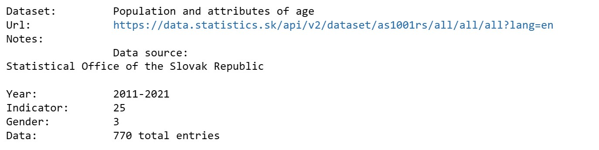
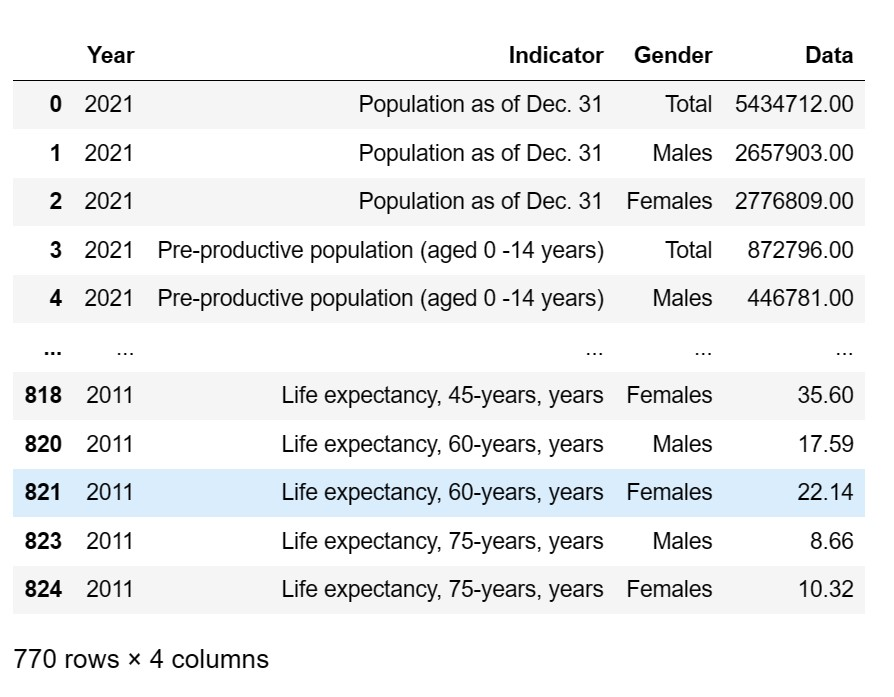
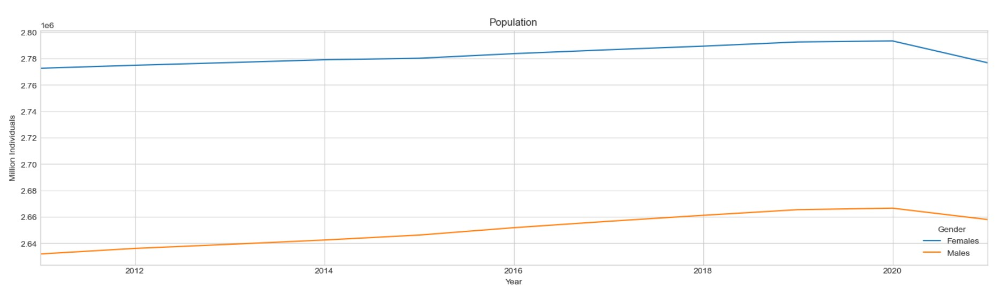

Python
Full ETL process and exploratory data analysis with external APIs and Python libraries
For this example we are pulling data from the Statistical Office of the Slovak Republic. Full code available on my GitHub.
After importing our libraries and defining some variables and helpers functions, we define a function to compose the API request according to the required parameters:
#for demonstration purposes we are pulling all the data from the chosen table
def compose_request_url (table_code,table_dimensions):
dimensions_url = ''
z = 0
while z < table_dimensions-1:
dimensions_url = dimensions_url + '/all'
z = z+1
request_url = base_dataset_url + table_code + dimensions_url + '?' + language
return request_url
The next step is to define a function that:
- sends the API request;
- stores the data we need in json format;
- calls another function to transfrom the data in a Pandas dataframe;
- returns the dataframe.
def get_dataset (dataset_index):
entry = tables_list[dataset_index]
print ('Dataset:\t', tables_list[dataset_index]['label'])
data_url = entry['href']
r2 = requests.get(data_url)
r2_json = r2.json()
table_dimensions = len(r2_json['dimension'])
base_url_span = len(base_dataset_url)
table_code = data_url[base_url_span:base_url_span+table_code_length]
request_url = compose_request_url(table_code,table_dimensions)
print ('Url:\t\t', request_url)
dataset_url = requests.get(request_url)
globals()['dataset'] = dataset_url.json()
print('Notes:\n\t\t', dataset['note'])
new_df = create_dataframe()
return new_df
For the purpose of this example, we will request the dataset "Population and attributes of age":  
Now that we have our dataset, we can start performing our analysis, manipulation and visualization. In this case we just want to visualize the total population by gender for each year:
population_by_year = population[population['Indicator'] == 'Population as of Dec. 31']
#we can set the actual date with the help of the indicator
population_by_year[population_by_year.columns[0]] = pd.to_datetime(population_by_year['Year'] + '-12-31')
#drop the useless column
population_by_year = population_by_year.drop(columns=['Indicator'])
#filter out the total
pop_gender = population_by_year[population_by_year['Gender'] != 'Total']
#then transpose the data for plotting
pop_gender_pivoted = pop_gender.pivot(index='Year', columns='Gender', values='Data')
#here we set a few variables for our chart
plt.style.use('seaborn-v0_8-whitegrid')
pop_gender_pivoted.plot(title='Population',ylabel='Million Individuals', figsize=(20,5))

If we were to complete a different task we could of course perform more in-depth manipulation (eg. linear regression/forecasting) in Python or perhaps export our data to another tool for advanced visualizations (eg. Tableau).